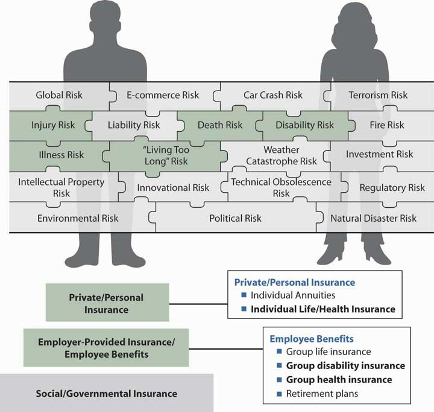

The costs of health care and health insurance have been of major social concern in the United States in the last three decades. The U.S. Department of Commerce Centers for Medicare and Medicaid Services reported that national health care expenditures were $2.1 trillion in 2006, up 6.7 percent from 2005. National health care expenditures made up 16 percent of gross domestic product (GDP) in 2006; by 2017, they are projected to rise to 19.5 percent.Insurance Information Institute, The Insurance Fact Book, 2009, 13–14. The 1980s were a decade of double-digit rate increases in health insurance cost, which was the impetus for the birth of managed-care plans such as preferred provider organizations (PPOs) and for the boom in health maintenance organizations (HMOs). The newest innovation of the new millennium is the defined contribution health plan, also called consumer-driven health plans (CDHPs) and high-deductible health plans (HDHPs) in the forms of health savings accounts (HSAs) and health reimbursement accounts (HRAs). The CDHPs and HDHPs intend to transform the defined benefits approach to health insurance into defined contribution plans as part of an ownership society paradigm. Because managed-care plans no longer limit the spiraling health care costs, the defined contribution health plans with large deductibles emerged as a solution, albeit with their own problems. The issues of high cost and the impact on benefits are discussed in more detail in the box “What Is the Tradeoff between Health Care Costs and Benefits?” later in this chapter.
Most nongovernmental health insurance is provided through employer groups. Health insurance is a substantial percentage of an employer’s total benefits expenditures. According to the Employee Benefit Research Institute (EBRI), of the $1.5 trillion in total employee benefit program outlays in 2007, employers spent $623.1 billion on health benefit plans. After retirement plans, health care was the second largest employer expenditure for employee benefits in 2007.Employee Benefit Research Institute, EBRI Databook on Employee Benefits, ch.2: “Finances of the Employee Benefit System,” updated September 2008, http://ebri.org/pdf/publications/books/databook/DB.chapter%2002.pdf (accessed April 22, 2009). Health insurance is a substantial expense for employers and a major concern of society. Just consider your own situation. Do you have health insurance coverage? If you responded yes, you probably feel very comfortable. If you do not have coverage, you are probably making a note to yourself to check how you can get coverage and be able to afford the cost. This chapter will touch upon that subject, too, because individual contracts are an important source of insurance for people without employer-sponsored benefits, or those employed but with inadequate employee benefits. Some of the policy characteristics of individual contracts are similar to those of group contracts; however, there are differences worthy of discussion. Thus, we explore the individual contract and also investigate various health policies, such as individual dental and cancer policies, individual long-term care insurance, and Medigap insurance. In this chapter, you will gain an understanding of the choices an employee has to make when given the option to select among various health plans such as PPOs, HMOs, HSAs, or HRAs, or the individual alternatives available when he or she does not have these options.
A practical application of the concepts discussed is provided in Cases 1 and 2 of Chapter 23 "Cases in Holistic Risk Management". Thus, this chapter covers the following:
Among the risks shown in the holistic risk puzzle, the risk of illness or injury is the leading personal risk. The desire to mitigate this risk—a cause of major expense—is why many employees would not take a job without health insurance as part of the compensation package. In the big picture of risk management in our lives, taking care of health insurance is ranked very high. If you have surveyed your friends or classmates, you have probably learned that those who do not have health insurance coverage are not comfortable about it. They are likely aware that a serious accident or severe illness could cause them serious financial trouble.
We believe that we are entitled to the best health care possible to protect our health and keep us well. While in the distant past, the town’s doctor visited a patient’s home to provide help and accepted any payment, today’s medical care is an impersonal business wherein doctors and emergency rooms require patients to show proof of capacity to pay. Health care coverage is expensive and deserves careful consideration in completing our holistic risk management. In Figure 22.1 "Links between Health Risks and Insurance Products", the connection between the health risk and the possible coverage available from the employer is depicted. It is important to note that if health care coverage is not available from an employer, it is the responsibility of the individual to obtain individual coverage. With the added individual products discussed in this chapter, we provide the final step in the three-step diagram shown in Figure 22.1 "Links between Health Risks and Insurance Products" and complete our study of holistic risk management. Individual arrangements for health, dental, disability, life, and pensions are necessary when all other programs represented in the bottom two steps do not complete the risk management program of a family. Case 1 of Chapter 23 "Cases in Holistic Risk Management" presents the risk management portfolio of the hypothetical Smith family, and group health is covered in the overview of a sample employee benefits handbook in Case 2 of Chapter 23 "Cases in Holistic Risk Management".
It is no wonder that health care issues have been high on the agendas of Congress and the new administration of President Barack Obama. The most notable issue is the proposed guarantee of health insurance for the 48 million Americans who are currently uninsured. Significant issues in health care over the years are discussed in the box “What Is the Tradeoff between Health Care Costs and Benefits?”
Figure 22.1 Links between Health Risks and Insurance Products
